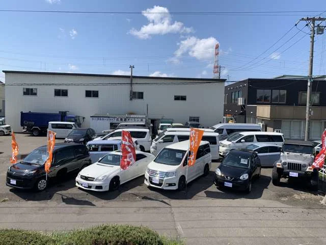
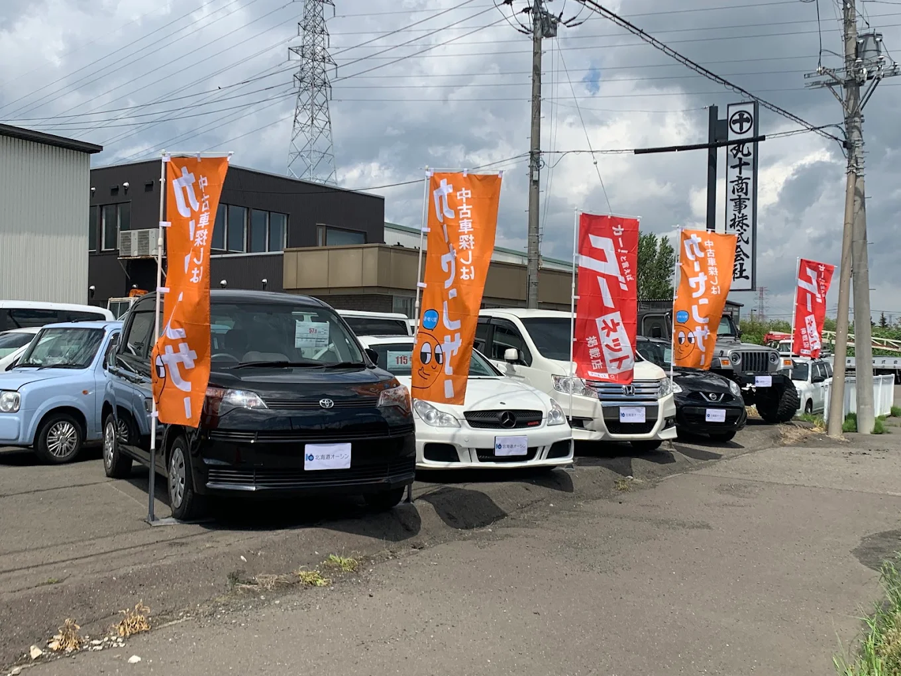
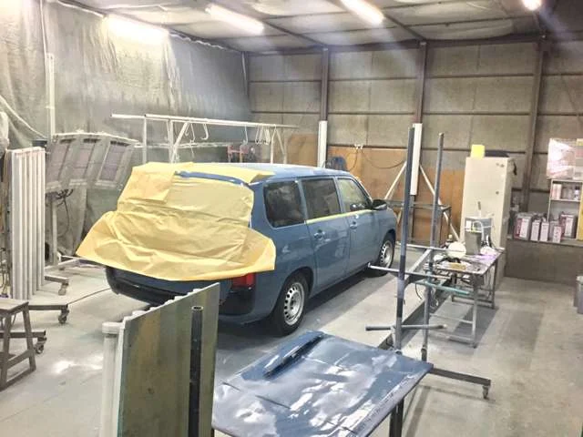
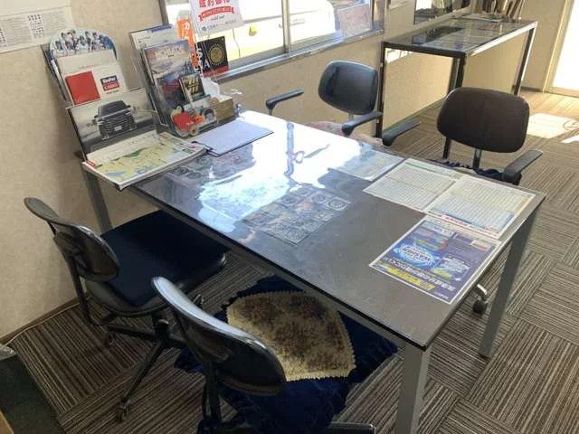

買う、直す、整える。車のことは、手稲の一軒で。
新車・中古車の販売から、車検、修理、板金塗装、カスタムまで。自社工場があるから、ご相談から納車・お引き渡しまで同じスタッフが責任を持って対応します。

創業44年
車に関することを、まとめて任せられます
販売店と整備工場を別々に探す必要はありません。ひとつの窓口でご相談ください。
新車・中古車販売
ご予算とお車の使い方に合わせて、お探しします。
車の買取
今のお車の乗り換えも、売却だけのご相談も歓迎です。
車検・点検・整備
自社工場で点検から整備まで行います。見積もりの内容は事前にご説明します。
修理・板金・塗装
キズやへこみの補修から、全塗装まで。敷地内の塗装ブースで対応します。
カスタム
リフトアップや足まわりなど、ご希望の仕上がりに合わせて相談できます。
タイヤ販売・交換
雪の多い札幌で安心して走れるタイヤを、ご提案します。
店舗・設備のご紹介
展示場、塗装ブース、商談スペースがひとつの敷地にそろっています。



44年続けてこられた理由
地域のお客様に支えられて、手稲で営業を続けています。
自社工場で完結
点検設備や塗装ブース、商談スペースが同じ敷地内にあります。外注の手間なく、話が早く進みます。
わかりやすい説明
見積もりから納車までの流れを、ひとつずつ丁寧にお伝えします。口コミサイトでも高い評価をいただいています。
専門的な作業にも対応
SUVやクロカン車のカスタム、輸入・大型車の部品交換など、ご相談に応じて対応します。
施工事例
ご依頼いただいた作業の一部です。
- マツダ CX-5インテークマニホールドの清掃
- スズキ ジムニー（JB64）リフトアップ
- トヨタ ランドクルーザーオルタネーター交換
- 各車種全塗装
※本番では、作業前後の写真と作業内容・費用の目安を掲載します。
車以外のご相談も
地域に根ざして、いくつかの事業を展開しています。
- レンタカー
- マリンジェットの販売・整備
- フードデリバリー
- 地域のオーガニックアスパラの取り扱い
会社情報・お問い合わせ
ご来店前のご相談、お見積もりだけでもお気軽にどうぞ。
- 会社名
- 北海道オーシン株式会社
- 所在地
- 〒006-0807 北海道札幌市手稲区新発寒7条1丁目3−10
- 電話
- 000-000-0000
- 営業時間
- 00:00〜00:00（定休日：○曜日）
- 創業
- 44年